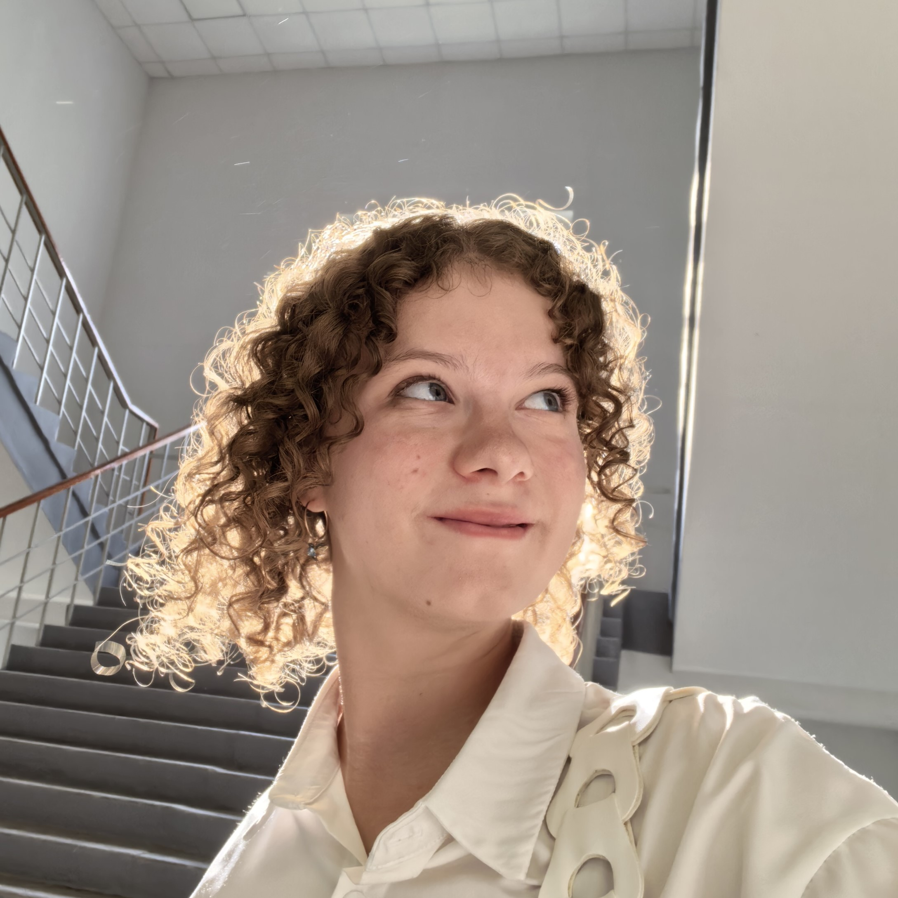

Место учебы
Фундаментальная и прикладная лингвистика, НИУ ВШЭ, Москва
Кудрявая и вечно куда-то бегущая
Можно просто Геля:)

Фундаментальная и прикладная лингвистика, НИУ ВШЭ, Москва
Владимир
Гимназия №35
-боевая творческая единица
-была в Артеке и Сириусе
-суперфиналист ЧС "Своими Словами", который раньше проводила Вышка
-мой любимый фильм - "The parent trap" ("Ловушка для родителей"), а ещё я обожаю смотреть period dramas (Little women, Pride and prejudice, Sense and sensibility, Jane Eyre, Emma...)
-слушаю Gracie Abrams, Olivia Rodrigo, Taylor Swift, Billie Eilish и Ульяну Мамушкину
-живу в Дубках
| Я не играла в Майнкрафт, но зато играла в Денди. Часами рубилась с дедушкой в "танчики" и проходила всего "Chip to Dale"))
| До поступления в ВШЭ я была там 15 раз (олимпиады, конкурсы, дни открытых дверей... И да, я считала)
| Я кудрявая от природы
| Знаю письмо Татьяны к Онегину наизусть на английском и русском. Чисто по приколу выучила
| Люблю бегать под дождём
| Я синестет! Это значит, что я воспринимаю каждую букву и цифру в своём цвете. Например, слово молоко я вижу так
| Умею (и очень люблю) кататься на водных лыжах. Попробовала пару лет назад, встала на них с третьей попытки
| Обожаю кислое. Тот самый человек, который с кайфом ест клюкву без сахара
| Я с первого раза сдала на права (причём без штрафных баллов). Хотя жутко переживала, и думала, что не сдам
| У меня есть свой домик на дереве. Он был моей детской мечтой: эстетик-пространство с кучей подушек, постеров и гирлянд
Я пишу стихи. Свой первый я написала в 6 лет. Когда мне было 8-11, мы с родителями собрали мои стихотворения в самодельные сборники и подарили знакомым. А сейчас я делюсь своим творчеством в ВК-сообществе. Там уже больше 1К подписчиков, присоединяйтесь!)